C Programming
Learn the fundamentals and advanced concepts of C programming
In this blog, we'll cover the following:
- Preprocessor Directives
- Tokens in C
- Formatted I/O Functions
- Unformatted I/O Functions
- Control Flow
- Arrays
- Array Operations
- Transpose
- Pattern Printing
- String Handling Functions
1. Types of Pre-processor Directives
Example:
#include <stdio.h>
#define MAX 100 // Macro definition
#include "myheader.h" // File inclusion (assuming a header file exists)
#ifdef DEBUG
#define DEBUG_PRINT printf("Debug mode is ON\n");
#else
#define DEBUG_PRINT // Empty macro if DEBUG is not defined
#endif
#pragma pack(1) // Other directive: structure packing
int main() {
DEBUG_PRINT;
printf("Max value: %d\n", MAX);
return 0;
}
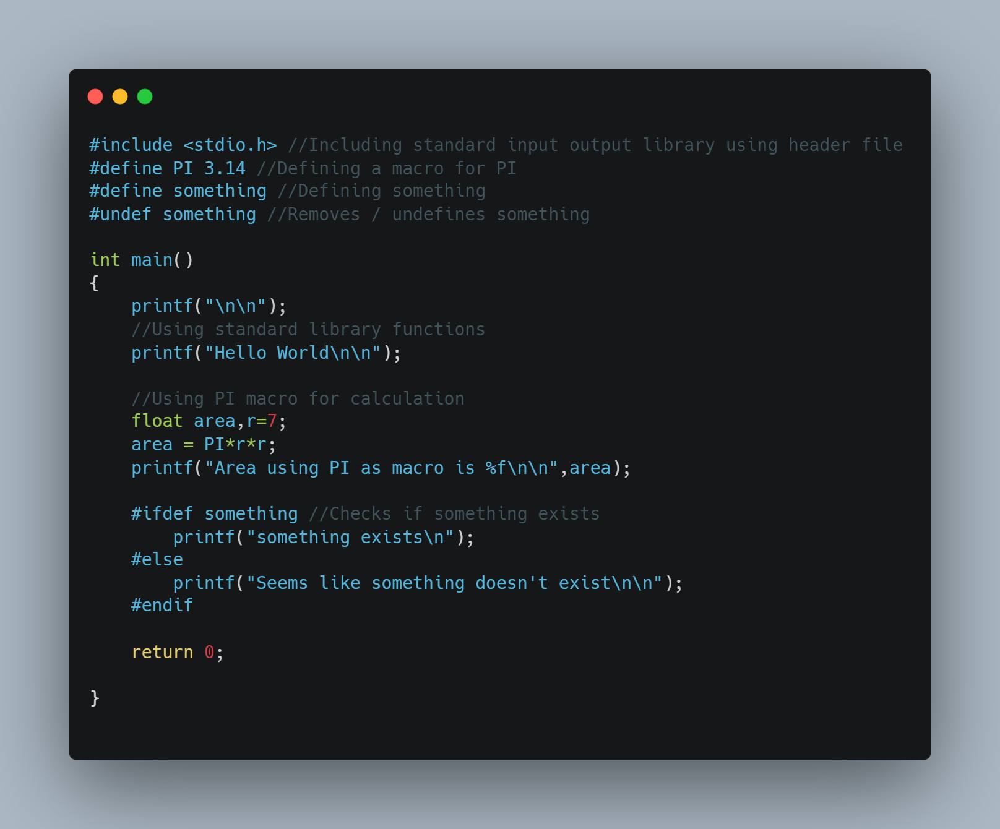
Output:
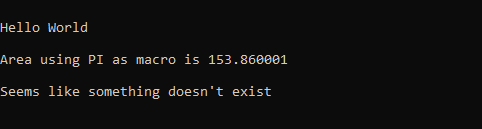2. Tokens in C
Example:
#include <stdio.h>
int main() {
int num = 10; // Keywords: int; Identifier: num; Constant: 10
char str[] = "Hello"; // String
int a = 5 + 3; // Operators: =, +; Special symbol: ;
printf("Number: %d, String: %s\n", num, str);
return 0;
}
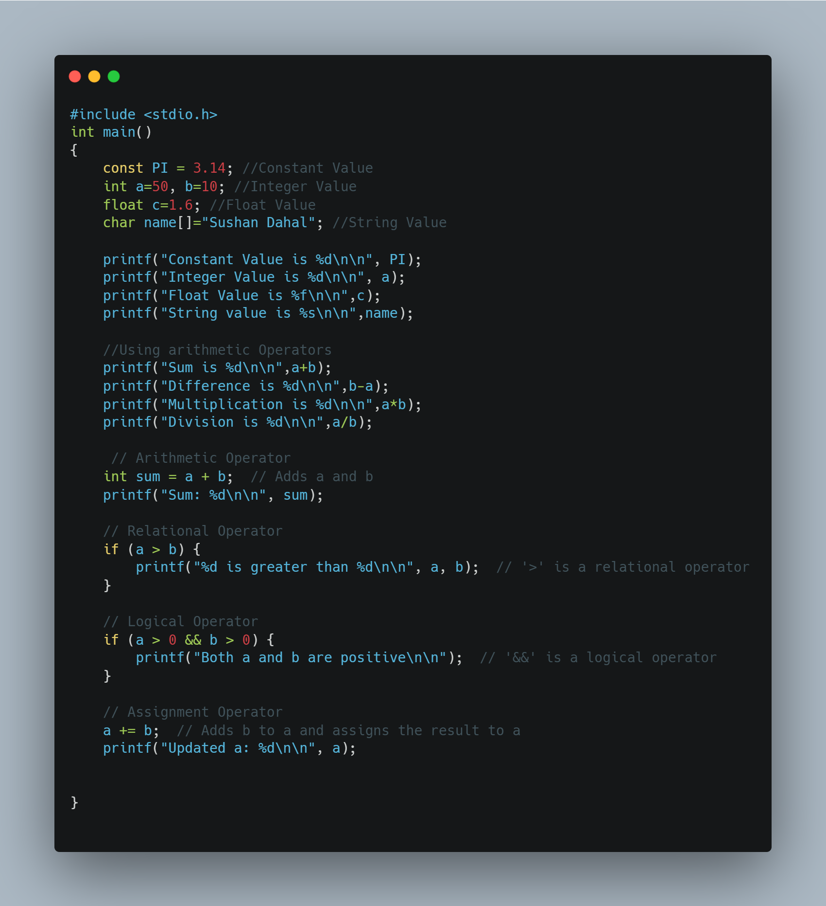
Output:
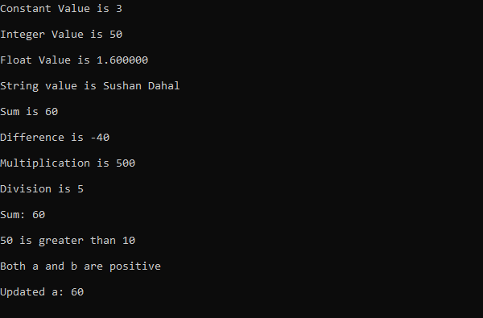3. Formatted I/O Functions
Example:
#include <stdio.h>
int main() {
int num;
printf("Enter a number: ");
scanf("%d", &num);
printf("You entered: %d\n", num);
return 0;
}
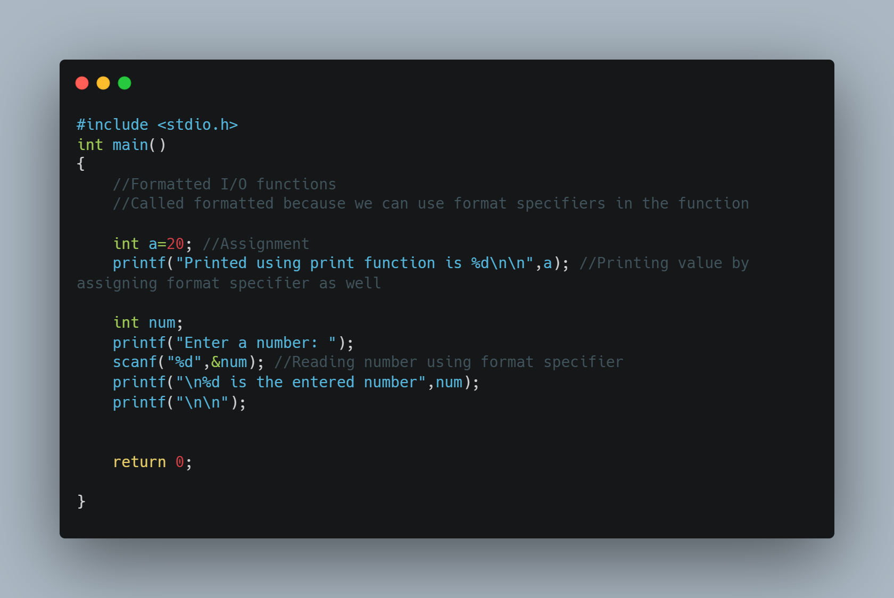
Output:
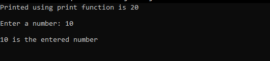4. Unformatted I/O Functions
Example:
#include <stdio.h>
int main() {
char ch, str[50];
printf("Enter a character: ");
ch = getchar();
putchar(ch);
printf("\nEnter a string: ");
fgets(str, 50, stdin); // Using fgets instead of gets for safety
puts(str);
return 0;
}
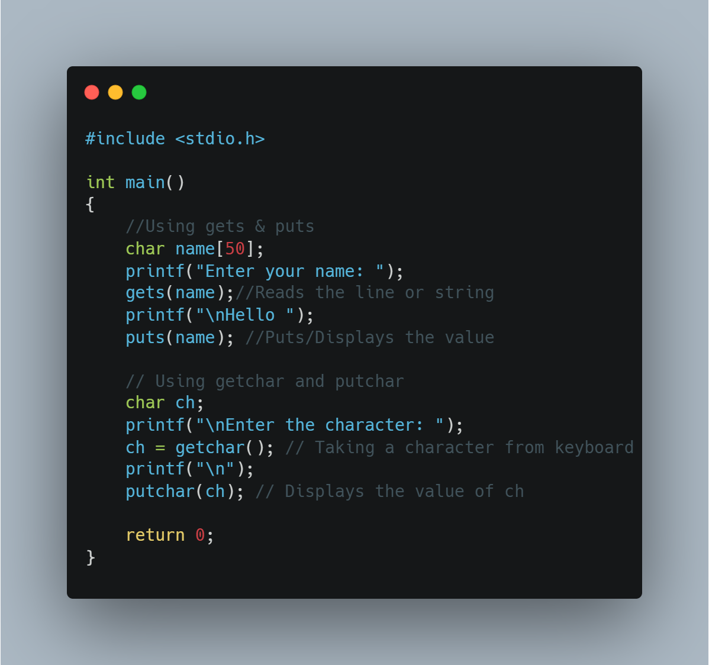
Output:
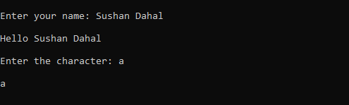5. Control Flow
Example:
#include <stdio.h>
int main() {
int choice = 2;
switch (choice) {
case 1:
printf("Choice 1 selected\n");
break;
case 2:
printf("Choice 2 selected, jumping to label\n");
goto mylabel;
default:
printf("Invalid choice\n");
}
mylabel:
printf("This is the goto label\n");
return 0;
}
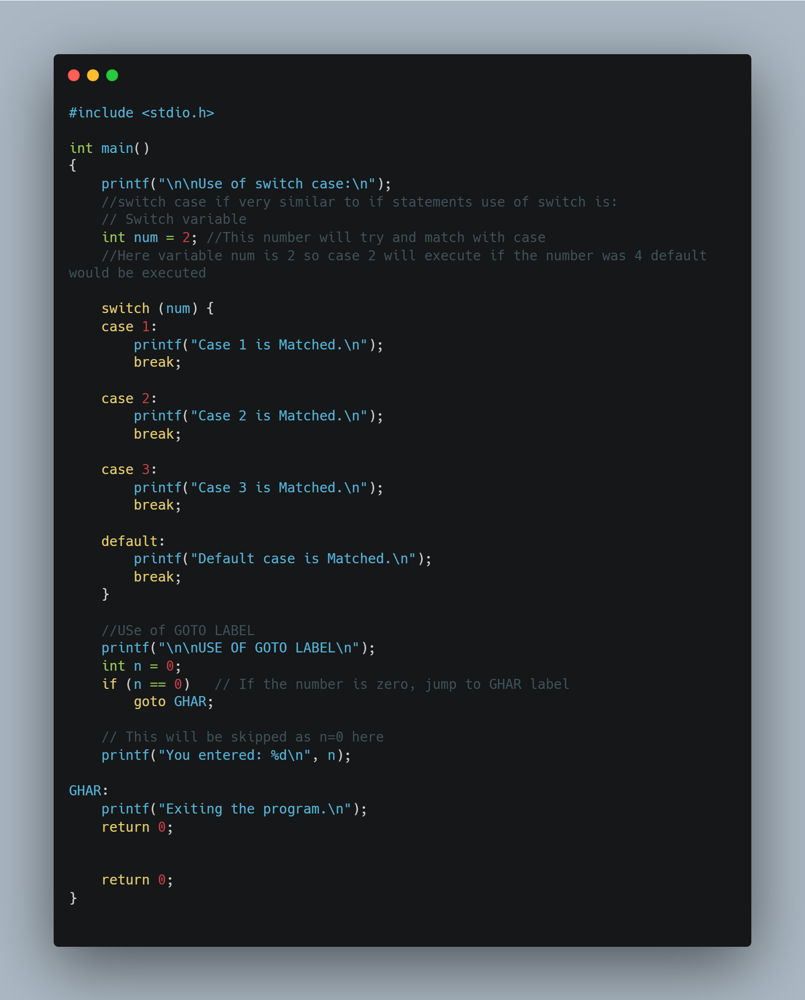
Output:

6. Arrays
Example:
#include <stdio.h>
int main() {
int arr1D[5] = {1, 2, 3, 4, 5}; // 1D array
int arr2D[2][3] = {{1, 2, 3}, {4, 5, 6}}; // 2D array
printf("1D Array: ");
for (int i = 0; i < 5; i++) {
printf("%d ", arr1D[i]);
}
printf("\n2D Array:\n");
for (int i = 0; i < 2; i++) {
for (int j = 0; j < 3; j++) {
printf("%d ", arr2D[i][j]);
}
printf("\n");
}
return 0;
}
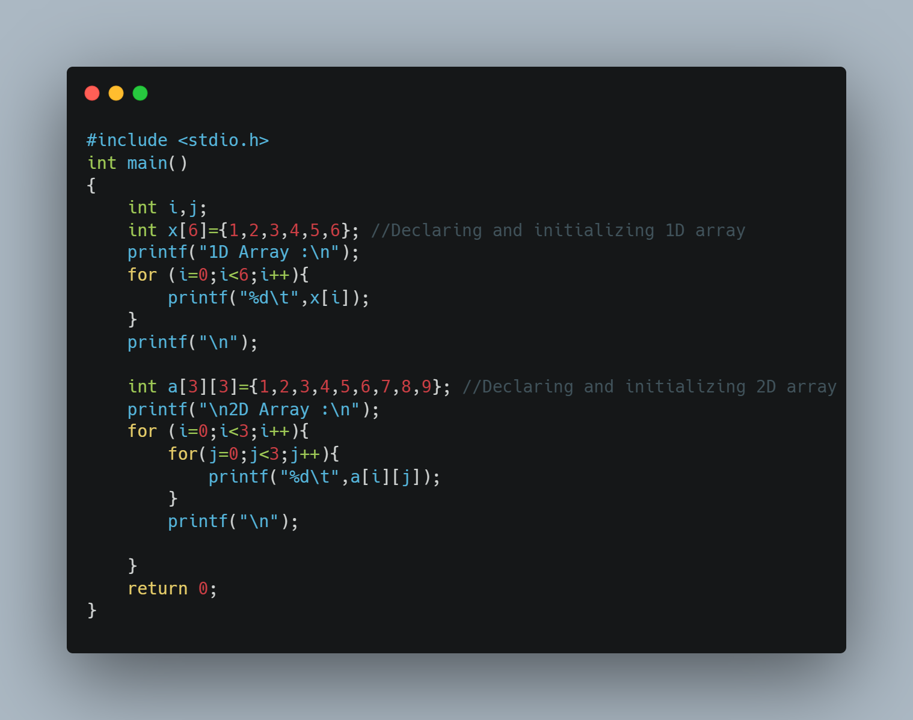
Output:
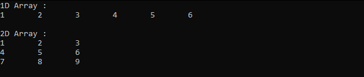7. Array Operations
Example:
#include <stdio.h>
int main() {
int arr1[3] = {1, 2, 3}, arr2[3] = {4, 5, 6};
int result[3];
for (int i = 0; i < 3; i++) {
result[i] = arr1[i] + arr2[i]; // Addition
printf("Sum[%d]: %d\n", i, result[i]);
}
return 0;
}
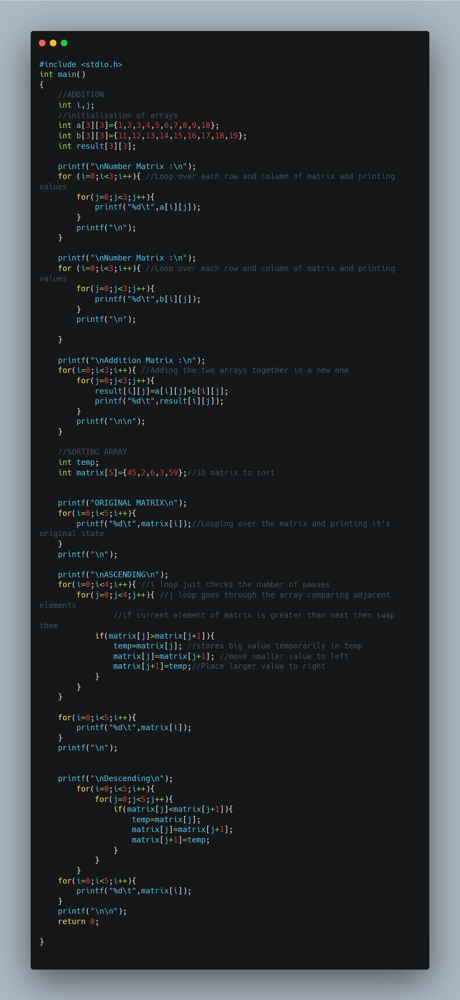
Output:
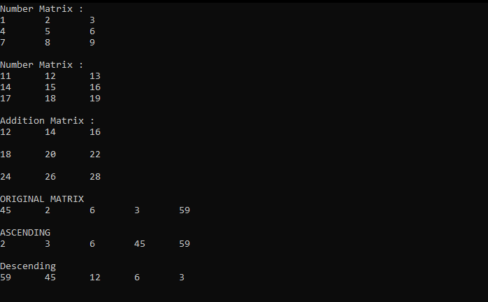8. Transpose of an Array
Example:
#include <stdio.h>
int main() {
int matrix[2][2] = {{1, 2}, {3, 4}};
int transpose[2][2];
for (int i = 0; i < 2; i++) {
for (int j = 0; j < 2; j++) {
transpose[j][i] = matrix[i][j]; // Transpose
}
}
printf("Transpose Matrix:\n");
for (int i = 0; i < 2; i++) {
for (int j = 0; j < 2; j++) {
printf("%d ", transpose[i][j]);
}
printf("\n");
}
return 0;
}
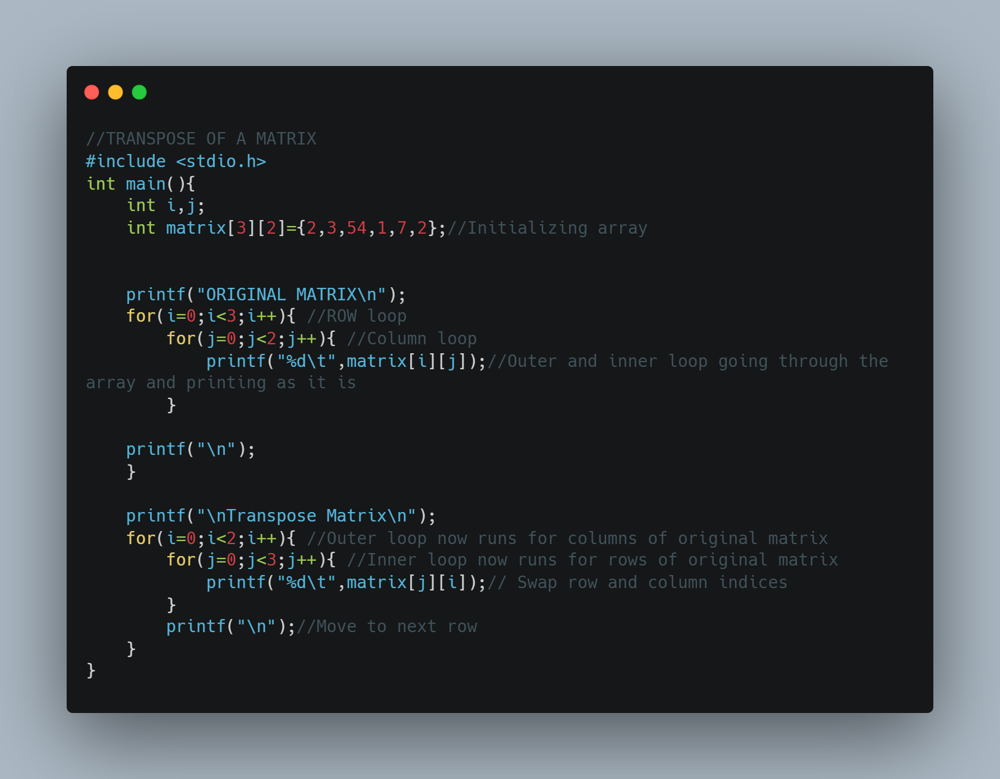
Output:
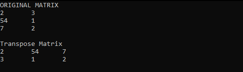9. Patterns
Example:
#include <stdio.h>
int main() {
int n = 4;
printf("Right Pyramid:\n");
for (int i = 1; i <= n; i++) {
for (int j = 1; j <= i; j++) {
printf("* ");
}
printf("\n");
}
return 0;
}
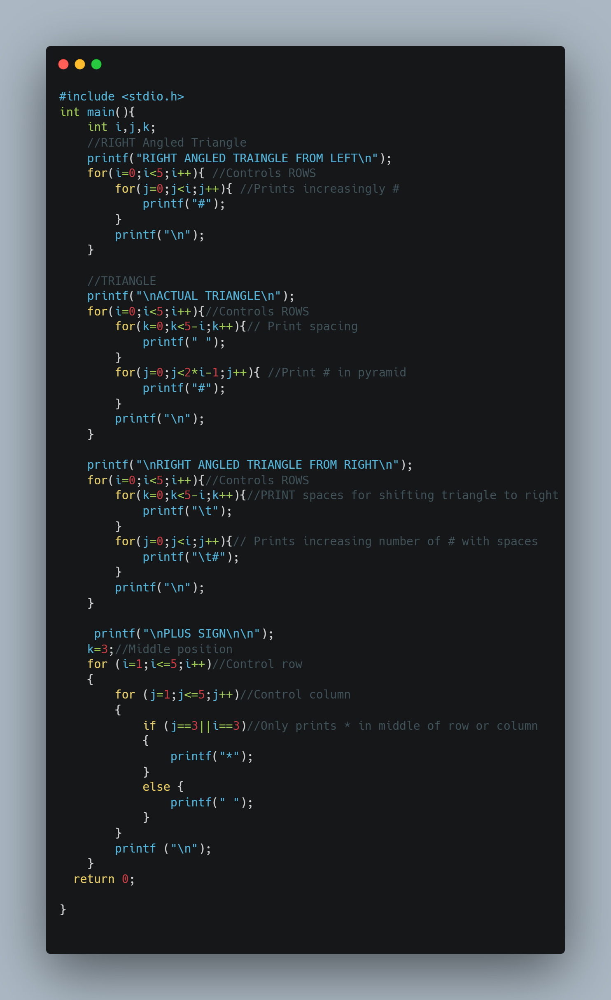
Output:
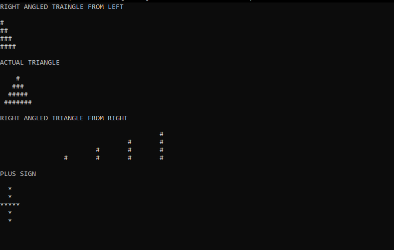10. String Handling Functions
Example:
#include <stdio.h>
#include <string.h>
int main() {
char str1[20] = "Hello";
char str2[20] = "World";
printf("Length of str1: %zu\n", strlen(str1));
strcat(str1, str2);
printf("Concatenated: %s\n", str1);
printf("Comparison: %d\n", strcmp(str1, str2));
return 0;
}
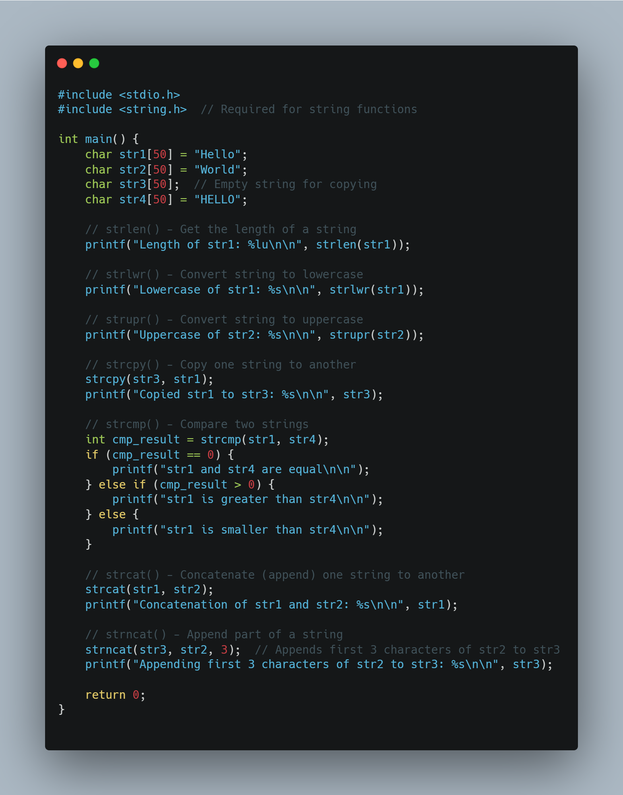
Output:
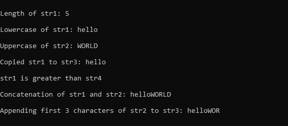